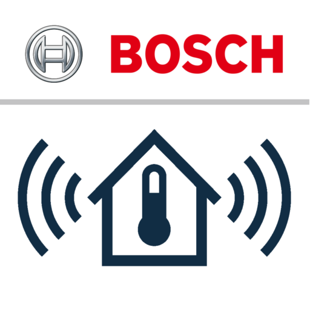

Bosch Easy Remote
A mobile app to remotely monitor and control home heating, hot water and climate — refactored from an older version and visually realigned to the Bosch brand styleguide.

><Controlling the home, remotely
Bosch EasyRemote lets people manage their heating system from their phone - setting room and hot-water temperatures, switching between automatic and manual modes, triggering an extra hot-water boost, and keeping an eye on energy use and system status without standing in front of the wall unit.
The app covers the full everyday loop: set a target, confirm what the system is doing, and review how it behaved over time — all designed to feel glanceable and trustworthy on a small screen.
><A refactor aligned to the Bosch styleguide
This project was a refactoring of an older, inconsistent version of the app. The starting point worked functionally but had drifted away from Bosch's visual identity, no longer reflecting the brand.
I reworked the interface against Bosch's own styleguide, bringing the colour, typography, iconography and components back in line with the brand while improving clarity and consistency across every screen. Beyond the visual refactor, the work also introduced usability improvements and new functionality, extending what users could monitor and control from the app.
><What the redesign improved
The redesigned screens
{{ s.desc }}